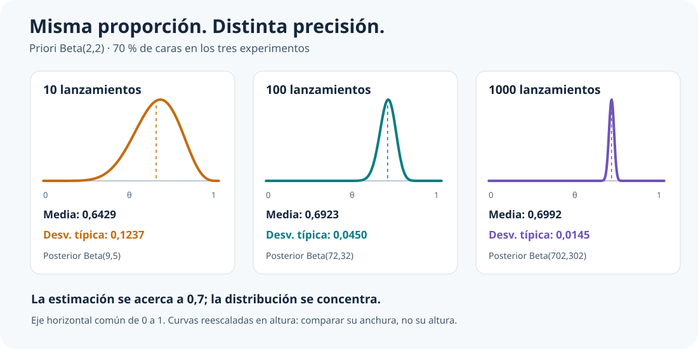

Predecir
Anticipa qué sucede con la distribución posterior cuando incorporamos más observaciones.
Estadística bayesiana · Modelo Beta-Binomial
Aprende a distinguir entre cambiar una estimación y ganar confianza en ella. Formula una predicción, contrástala con los datos y explica qué has descubierto.
Un recorrido para predecir, contrastar tus hipótesis e interpretar resultados.
Anticipa qué sucede con la distribución posterior cuando incorporamos más observaciones.
Explora el efecto de la información previa, los éxitos y el tamaño de la muestra.
Responde preguntas sobre medias, incertidumbre y prioris basándote en los gráficos.
Recibe una puntuación y explicaciones específicas para cada respuesta.
Modifica parámetros, compara distribuciones e investiga tus propias preguntas.
Abrir laboratorio ↓Predice, experimenta y responde un cuestionario autocorregible con feedback.
Iniciar actividad guiada ↓Actividad guiada · Autocorrección
Formula una predicción, descubre tres experimentos y responde un cuestionario de interpretación. Al terminar recibirás una puntuación de 0 a 10 y explicaciones para cada respuesta.
La probabilidad de cara θ es desconocida. Partimos de Beta(2,2) y observamos un 70 % de caras con n=10, 100 y 1000.
¿Cómo crees que evolucionarán las distribuciones posteriores al aumentar la muestra sin variar la proporción?
La predicción no se puntúa: sirve para contrastar ideas antes y después de experimentar.
Revela en orden las tres muestras. Las curvas y sus estadísticas se acumulan. Permanecerán visibles durante el cuestionario.
Aún no has observado ningún experimento.
La escala horizontal muestra θ entre 0 y 1; la vertical representa densidad, no probabilidad puntual. Los valores precisos se presentan en la tabla.
| n | Caras | Posterior | Media | Desv. típica |
|---|
Contesta seis preguntas tipo test, todas obligatorias. La puntuación total es de 10 puntos. Consulta los gráficos y la tabla para responder. Recibirás la corrección y las explicaciones al finalizar.
Exploración libre · Actualización visual
Modifica la priori y las observaciones. Observa cómo cambia tu estimación de θ y la incertidumbre que la acompaña.
Ambas densidades se muestran en un mismo sistema de ejes y con la misma escala vertical.
La curva a priori se representa discontinua y la posterior continua. El eje horizontal muestra θ de 0 a 1 y el vertical representa densidad. Los estadísticos aparecen debajo.
Frecuencia observada: 70,0000 %
Misma priori Beta(2,2) y 70 % de caras en cada experimento. Activa o desactiva curvas para compararlas sin cambiar el experimento principal.
| n | Caras | Posterior | Media | Desv. típica |
|---|---|---|---|---|
| 10 | 7 | Beta(9,5) | 0,6429 | 0,1237 |
| 100 | 70 | Beta(72,32) | 0,6923 | 0,0450 |
| 1000 | 700 | Beta(702,302) | 0,6992 | 0,0145 |
Los gráficos se visualizan mediante Plotly.js, cargado desde un CDN. Necesitas conexión a Internet; los cálculos y las tablas no dependen de él.
Resumen didáctico · Consultar después de predecir
Mismo 70 % de caras, distinto tamaño muestral. Las medias posteriores se aproximan a 0,7, pero la reducción de la desviación típica es especialmente significativa.

En una distribución continua, la altura de la curva es densidad, no la probabilidad de un valor exacto de θ. La probabilidad de un intervalo corresponde al área bajo la curva dentro de ese intervalo. Al acumular datos, la densidad se concentra sobre una región más estrecha.
El reto que investigaremos
En los tres experimentos observamos un 70 % de caras. ¿Serán iguales las distribuciones posteriores? ¿Qué cambia realmente al aumentar los datos?